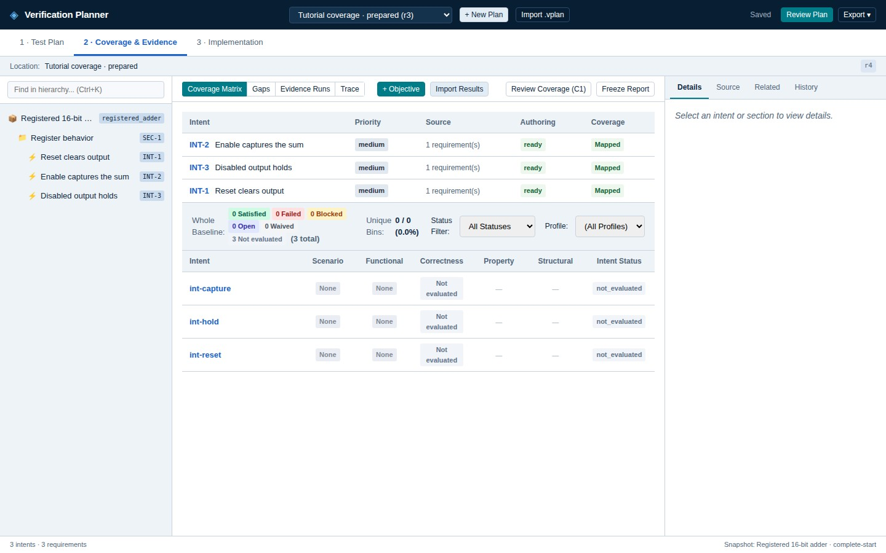

VERIFICATION PLANNER · GUIDED PRACTICE
Map coverage and import evidence
Freeze coverage policy and inspect clearly marked synthetic evidence.
Before you start
Verification Planner and the prepared Tutorial coverage plan. It includes reviewed P1 and checking policies for reset and capture, but no hold objective or C1.
Read each action, do it, then compare the expected result before continuing. Use a fresh prepared start to retry. Reading time and automated execution time are not measured learner practice time.
Actions
Select the coverage start
Select Tutorial coverage with your run name. Open 2 · Coverage & Evidence.Expected result: The start has reviewed P1 and checking policies for reset and capture, but no hold objective or C1.
Inspect the existing policies
Compare each intent with its checking objective.Expected result: A scenario hit alone cannot establish correctness of an intent.
Add the hold objective
Select + Objective. Enter Disabled output holds, choose correctness, and link the Disabled output holds intent.Expected result: The objective belongs to the intended behavior.
Set acceptance and save
Enter the expected observation “y remains 16 when enable=0”. Select Pass Verdict Required and Save Objective. Inspect its evidence policy.Expected result: The hold intent now has an explicit checking objective and policy.

Coverage objectives and evidence policy are separate from scenario activity. Select the image to view its full size. Review coverage
Select Review Coverage (C1), choose the prepared P1, and read the checklist and blockers.Expected result: The review candidate is tied to the intended upstream checkpoint.
Freeze C1
Confirm the clear review and inspect C1.Expected result: The checkpoint freezes objectives and policies against P1.
Switch to the evidence exercise
Select the separate Tutorial evidence plan with your run name and its prepared campaign.Expected result: This plan already supplies C1, an evaluation profile, and a campaign that match the teaching result file.
Stage the result import
Select Import Results, pasteverification/synthetic-results.json, choose the matching profile, and select Stage & Validate Preview.Expected result: The preview identifies explicitly synthetic observations; nothing has been committed yet.

Stage and validate a synthetic result import before committing it. Select the image to view its full size. Commit the validated import
Review its identities and preview, then select Commit Import.Expected result: The imported run retains its producer, checkpoint, profile, and synthetic provenance.
Inspect outcomes and gaps
Inspect Coverage Matrix, Gaps, Evidence Runs, and Trace.Expected result: A later pass does not erase an earlier failure. The teaching data is not hardware simulation evidence.

Check your result
You have created C1 on one teaching plan and imported a synthetic run into a separate prepared evidence plan. Provenance remains visible.
Try it yourself
Inspect one checking objective and identify its minimum evaluation requirement. Explain why zero observations cannot establish full coverage.
If it fails
If import reports a checkpoint or profile mismatch, use the Tutorial evidence plan and its matching result file together. Do not change result identities to conceal a mismatch.
Continue
CONTINUEExplore another feature →Reference: verification planner · Complete example